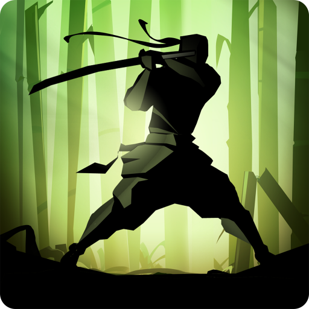

Shadow Fight 2
zzzz<РАЗРАБОТЧИК
zzzz<ИЗДАТЕЛЬ
zzzz<ДАТА АНОНСА
zzzz<ДАТА РЕЛИЗА
zzzz<СЛЕДУЮЩАЯ cnnc ИГРА СЕРИИ
zzzz<ПРЕДЫДУЩАЯ cnnc ИГРА СЕРИИ
zzzz<Banzai
zzzz<Nekki
zzzz<9 октября 2013 года
zzzz<1 мая 2014 года
zzzz<Shadow Fight 2: Special Edition
zzzz< Бой с Тенью
Shadow Fight 2 - ролевая боевая игра, разработанная компанией Banzai и изданная Nekki. Пролог игры повествует об предыстории главного героя. В этом введении рассказчик (который является главным героем) говорит о том, что он был величайшим и непобедимым воином. В своем стремлении найти достойного противника он путешествовал по всему миру, и вскоре наткнулся на Врата теней. Открыв их, он выпустил демонов в мир, а сам потерял материальное тело, обратившись в Тень. Игра начинается с того момента, когда Тень возвращается к своему наставнику, Сэнсэю.
Рысь первый из демонов. Является главой Ордена ассасинов, в прошлом был наемным убийцей. Его броня не имеет зачарования, компенсируется это двумя зачарованиями на его оружии: Часовая бомба и Отравление. Первый кто использует метательное оружие. Оно зачаровано на Отравление. Способность Рыси - невидимость на 10 секунд.
Отшельник является создателем школы боевых искуств. Его броня зачарована на быструю перезарядку магии, его оружие это мечи, зачарованы на Отравление. После победы над ним Тень сможет пользоваться магией. Способность Отшельника - медитация, он садится на землю и взлетает, затем покрывает себя молниевой сферой, на Тень обрушаются молнии.>
Мясник является главой банды убийц, впервые о нем говорит Отшельник, прося Тень избавиться от него. В качестве оружия использует тесаки, зачарованные на Кровотечение. Мантия зачарована на Неистовство. Мясник пользуется магией. Способнность Мясника - землятресение, он делает прыжок, после которого будет сотрясаться земля.
Вдова убедила Осу в том что должны править женщины и тогда Оса свергнула своего отца, пиратского Барона. В качестве оружия используют нагинату, она зачарована на меткость. Броня Осы зачарована на возврат урона. Способность Осы - полет, она, приблизившись к стене, запрыгнет на неё, а затем пролетит до другой стороны ринга.
Она подчинила себе всех мужчин в городе, чтобы они поубивали друг друга. В качестве оружия Вдова использует стальные веера, они зачарованы на кражу здоровья. Удары по ней могут запустить действие зачарования "Восстановление". У нее четыре вида магии — Энергетический Шар, Ледяной Шар, Ледяные Шипы и Телепортация, являющаяся ее способностью.
Сёгун был военачальником, служившим Князю. Впоследствии правление провинцией перешло к нему. Его броня зачарована на поглощение урона. В качестве оружия Сёгун использует катану и вакидзаси, появляющееся при супер-ударе. Зачаровано оружие на перегрев. Способностью Сёгуна является призыв одного из телохранителей. В качестве магии Сёгун использует Огненный шар, Огненный столб и Астероид.
Телохранители - бойцы которые защищают или мешают дойти до босса.